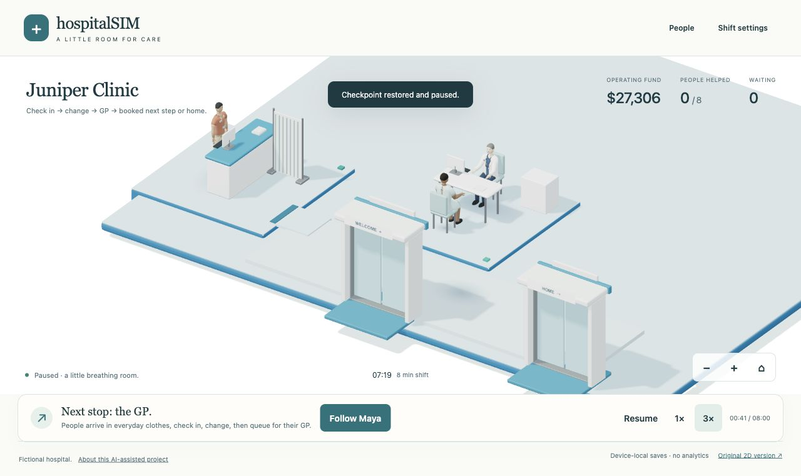
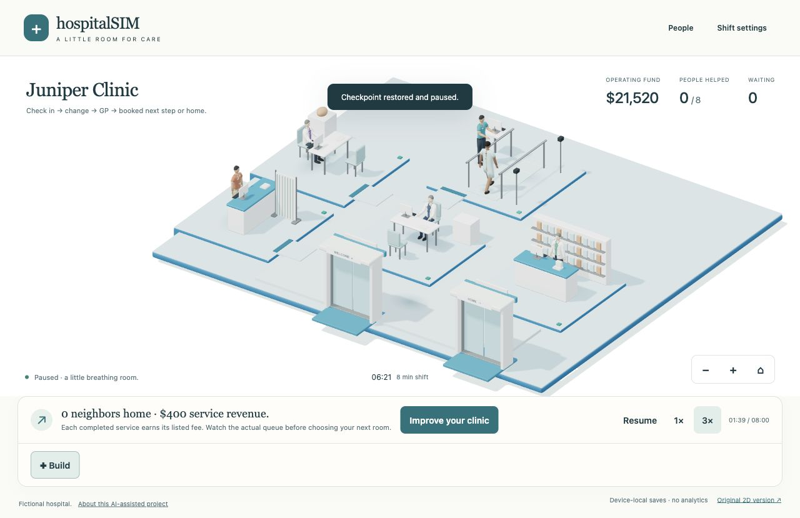
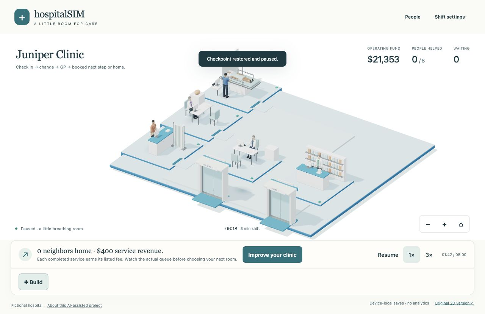
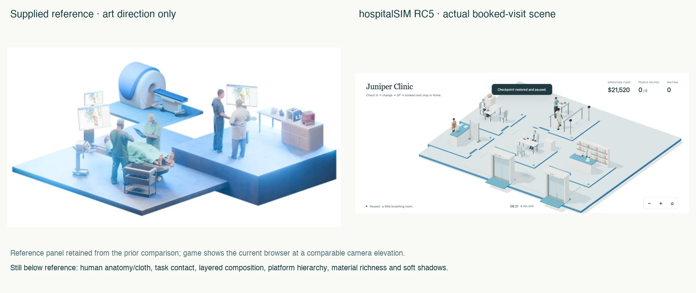
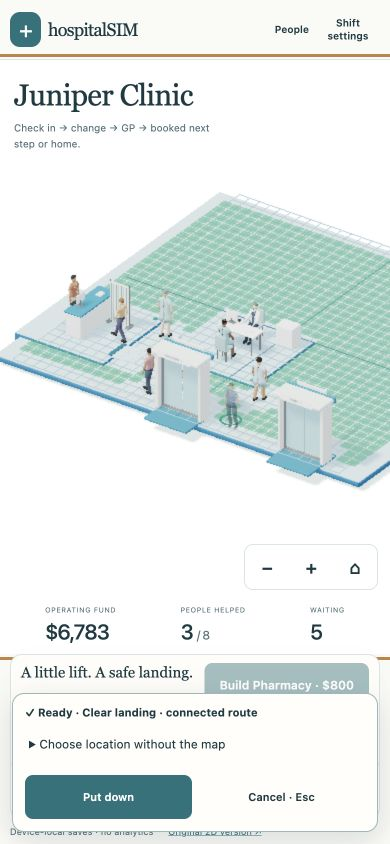

Current RC6 campus: larger buildable land and its verification →
RC5 starts empty. Build reception and hire Quinn, then add a GP room and hire Mira. Open the doors when ready. Patients arrive in everyday clothes and use their own side of the desk. Completed services earn fees.
Runtime128 also restores everyday clothes for people who leave a queue early. This visual correction does not change visit timings or outcomes.
Download recording · Recorded state and decisions
90 game seconds from an empty clinic, seed431, normal speed. Includes original Blender models, build/hire/open actions, arrival, check-in, gown change, GP service, fee and completed exit. The recording captures the actual3Dcanvas with state captions; HTML menus are summarized, and no audio is recorded. The state log replays exactly in a headless check.
Pharmacy has a separately hired pharmacist. Neurology, gait assessment, video EEG and sleep labs each need an appropriate assigned colleague. These are pre-booked fictional visits, not player diagnoses or medication choices. All-visitor gown changes and short service times are game conventions.
Still images use valid model-generated QA checkpoints with extra test funds. They show poses and room layout, not scored gameplay or player results.




The camera elevation is comparable; the composition is different. The reference has more natural humans, richer fabric, finer hand contact, softer shadows and a much stronger three-platform hierarchy. The current clinic is flatter, simpler and sparser. This is a flow improvement, not a claim of equivalent visual quality.
At390×844 on the desktop’s Apple M2 browser, the mobile30 renderer was active. The observed two-room scene used58,089 main-pass triangles and62 draw calls; sampled mean frame interval33.38ms, p95 49.90ms. A later pickup test confirmed direct press, opacity0.5, green valid landings, placement and a reaction. All visible essential controls were at least44px high and the page width remained390px. These figures are desktop narrow-viewport observations, not an iPhone benchmark.

Initial GLBs measure19.01MB raw and6.24MB gzip locally. Actual CDN transfer and phone performance require separate measurement. The27 game suites,250 portfolio tests, type check and production build are part of this release’s verification record. No application errors remained in the working QA origin; an earlier local-server connection failure was fixed before publication.
Full model, clinical terminology sources, executed Blender pipeline and limitations · Asset provenance and measured geometry · Historical RC4 opening
This remains a substantially AI-assisted engineering release candidate. No external clinician/educator review, physical-iPhone retest or learning/fun efficacy study is claimed.